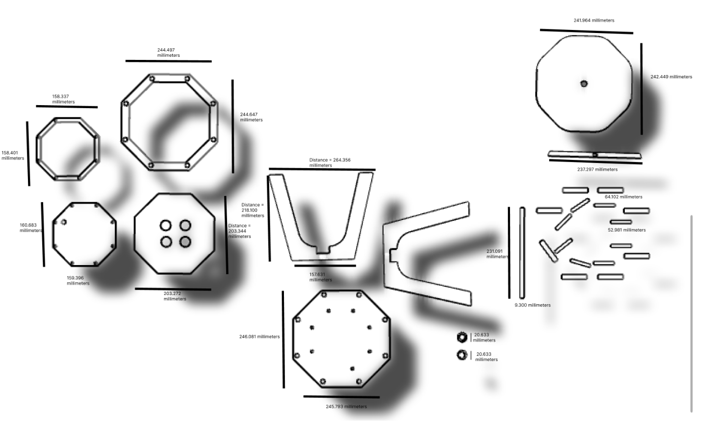
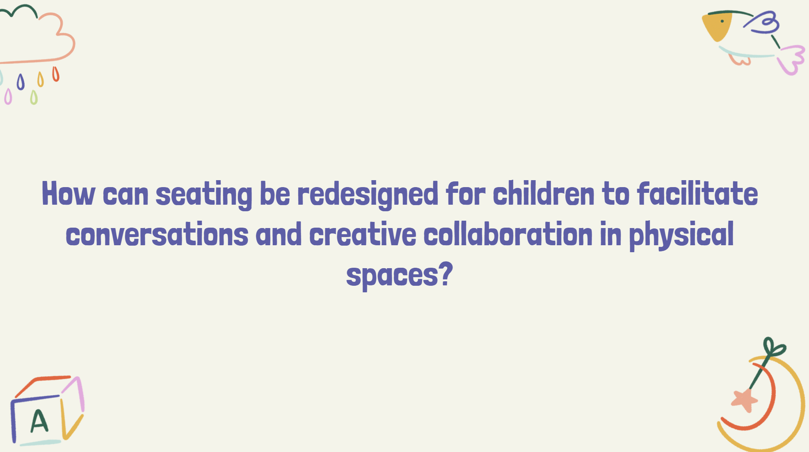
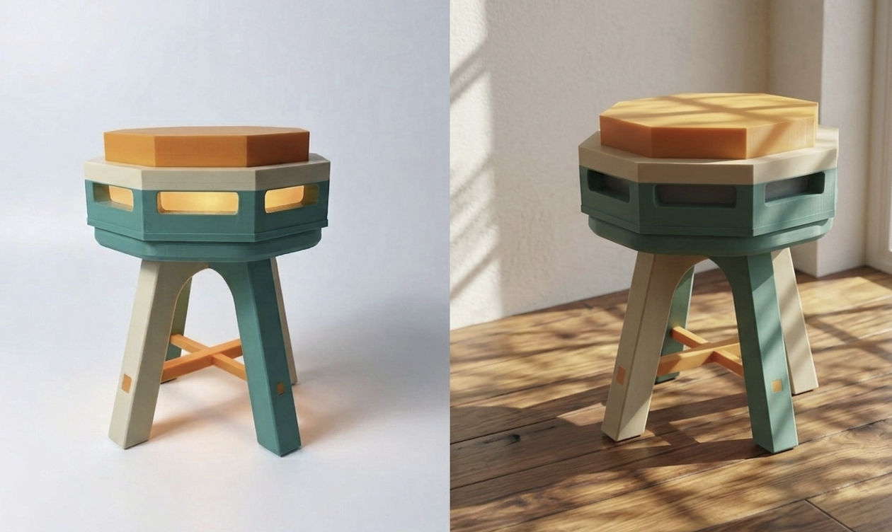
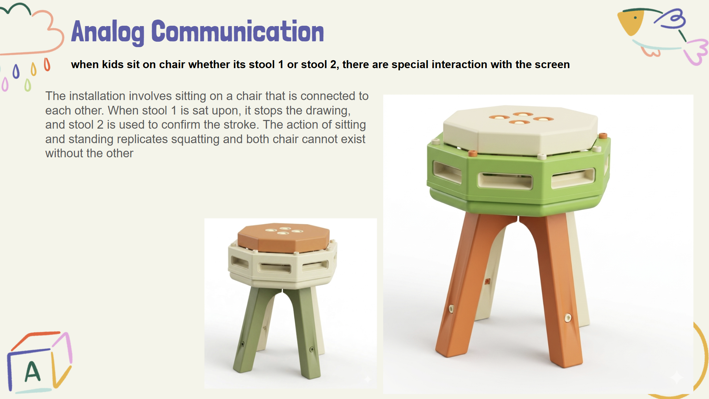
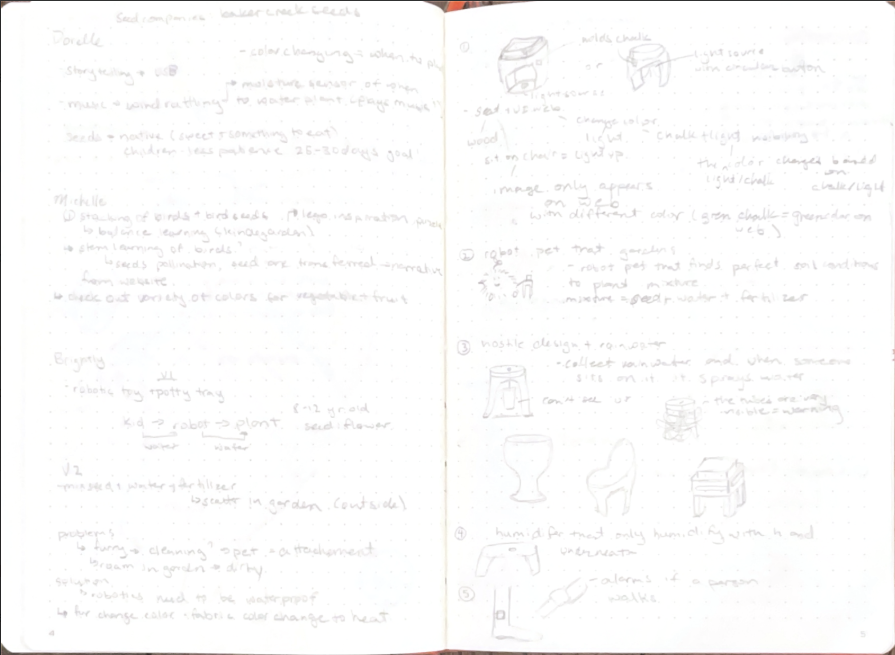
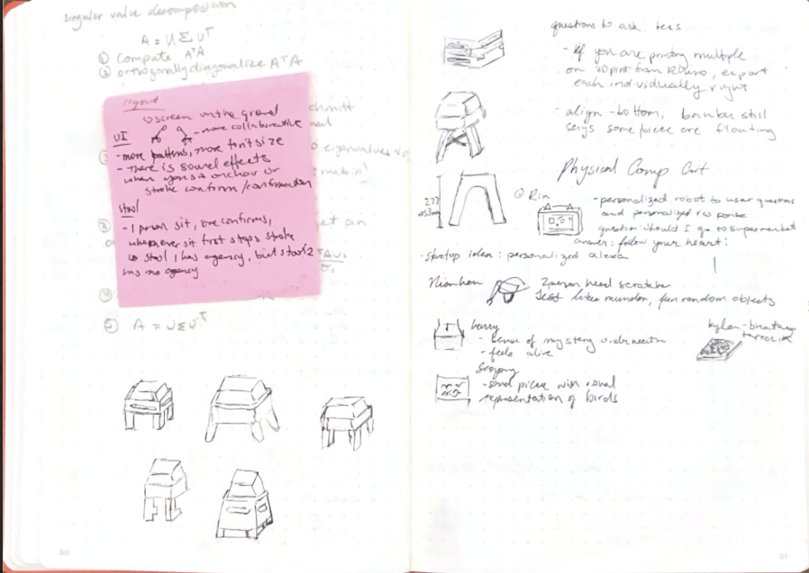

Collaborative Drawing Stool
Two stools that collaborate and interact with the screen. There is a stroke that travels randomly in a random color and special effect. When the first person sits the stool stops the stroke and the second person has 5 seconds to confirm the stroke on the canvas or else it will be erased and a new stroke will restart. If there is one person playing than it turns into a traditional drawing tool with special effects.

Conducted 20 surveys via Google Forms of kids age 4–13 years old. The survey aimed to find the relationship between kids, technology, drawing and social life. Main takeaways include: children enjoying in-person over online connection with friends, but still spend significant time on the screen.
From the results of how children make friends I was intrigued by the topic: a hybrid activity of physical and digital experience.




Social media has changed how children communicate, play and socialize with each other. This led me to explore how installation and furniture can be redesigned to increase physical movement, social connection and creative thinking.
The installation involves sitting on a chair that lights up and a response will appear on the screen: connecting the digital and physical.
Its aim is to foster creative collaboration between children where both work together to stop the generative stroke on the screen and by sitting they can confirm strokes and make them stay on the screen. Together kids can create an abstract drawing, build a connection and have fun exercising.
Looked into various stool designs and was inspired by Complementary Bright Colors, the idea of creating a stool inspired by the Button specifically Button that contain a spring function.

